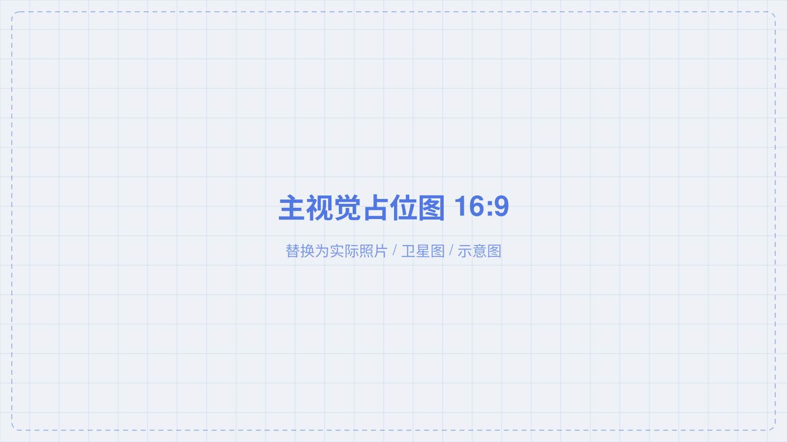
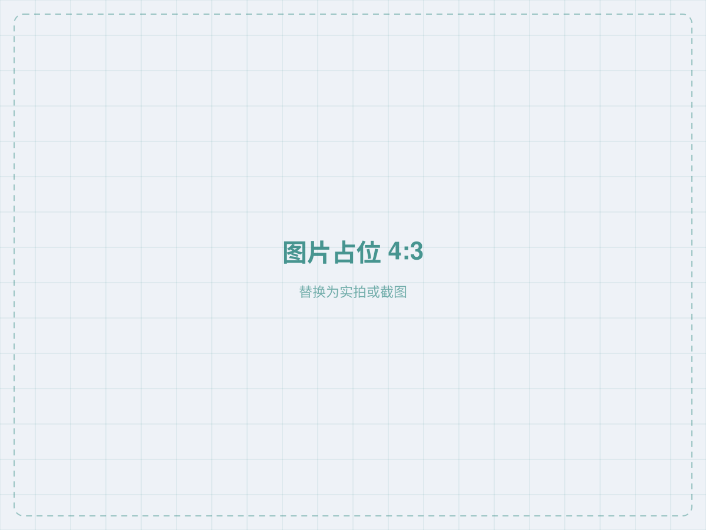

这里放三到四行的摘要，说明背景、方法与结论的主线。摘要不做罗列，只交代这份汇报的推进逻辑，让听众在三十秒内知道接下来会看到什么。
主视觉占据舞台左侧大部，右侧只留三条论点。

两到三行说明，控制在九十字以内。文字是图的注解，不重复图里的信息。
需要数字时把数字给出来，并交代单位与统计口径，避免空泛表述。
落在这条上收束本页，指向下一页要展开的方法。
时间轴适合交代沿革，一行一个阶段，不宜超过五行。
这个阶段发生了什么，用一句话说清关键转折。
机制开始成形，出现了哪些可量化的变化。
当前所处阶段，以及尚未解决的部分。

三栏等高卡片，一栏一条路径，每栏三行要点。
一句话交代这条路径解决什么、为什么必须由它承担。
一句话交代这条路径与主线一的衔接关系。
一句话交代这条路径最终落到什么可验证的结果上。
上方一条下行箭头、下方一条上行箭头，中间三个环节。
说明这一层要影响下一层，需要具备哪些前提；缺了前提会发生什么。
说明结果如何回流到上游，以及回流周期有多长。
两图同尺度并列，比一张拼图更有说服力。
给出可比的量化指标与统计口径。
指出哪一项措施起了决定作用。
说明这个做法在什么条件下成立。
长图、截图、密集图表都可放进展台，滚轮可看细节。
先告诉听众看这张图的哪个区域，再看整体。
把图中细节与前面的论点对应起来。
指出这张图无法证明的部分，提前回应可能的追问。
KPI 数字、分布柱、趋势线、换算标尺，数值务必真实可溯源。
同一指标在不同口径下的差异，最能说明问题出在哪。
指出两组数据的差距来源，不要只说"有差异"。
这个差异会影响哪个判断。
结论页不追加新信息，只收束前文。
用一句话给出本报告最核心的结论，并说明它成立的条件。
给出可用于其他场景的迁移结论。
指出尚未解决的部分，留出后续工作的空间。
汇报人姓名 · 单位
https://example.com
把数据来源、统计口径、方法局限一次性交代清楚。